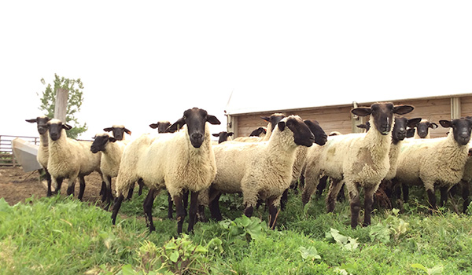

Sheep

Sheep is a common animal found on farms. Some of the things they are used for include:
Making wool clothes
Using their organs and meat for cooking purposes, especially
in Mongolia, Turkmenistan, New Zealand, Iceland and
Greece
Producing milk
More info found
here
.